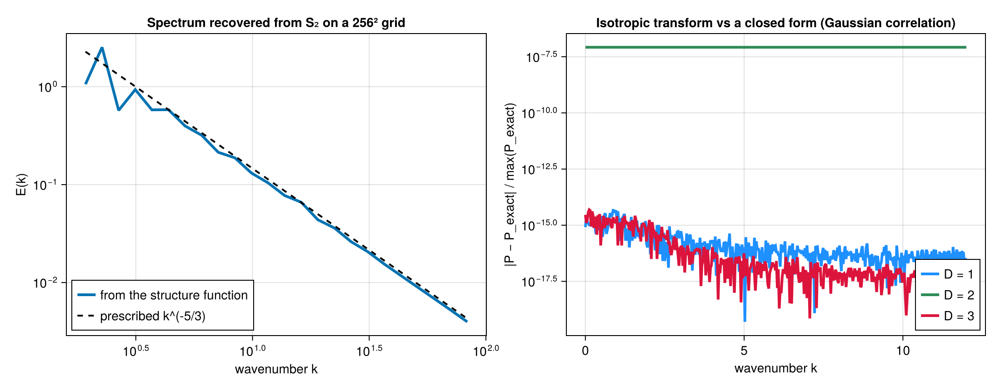

Validation
Each calculation is cross-checked against an independent reference. The oracles below are listed from the tightest agreement to the loosest: an oracle exact to round-off also catches a result that is off by a constant factor.
The oracles
| # | Oracle | Agreement | What it gates | Where |
|---|---|---|---|---|
| 1 | Closed-form Fourier modes | round-off | binning, operators, lag enumeration | test/test_known_truth.jl |
| 2 | Transform vs direct sweep | round-off | the two gridded algorithms against each other | test/test_gridded_fft.jl |
| 3 | Gridded vs unstructured pair loop | exact counts | the whole gridded path against the reference loop | test/test_gridded.jl |
| 3b | Separable transform vs sweep vs pair loop | exact counts, round-off | lat-lon and stretched grids on both algorithms | test/test_gridded_separable.jl |
| 4 | Culled vs unculled | exact counts | culling changes cost, never results | test/test_cpu_pair_blocking.jl |
| 5 | Backend agreement | round-off | every method of the threaded backend and each mechanism of the distributed and distributed+threaded backends against serial; each worker's share of every partial family | test/test_parallel_equivalence.jl |
| 5b | MPI agreement across ranks | round-off | each reduction of the MPI backend on two ranks | test/test_mpi.jl |
| 6 | Unit invariance | round-off | quantities independent of the unit of length | test/test_known_truth.jl |
| 7 | Frame invariance | round-off | the tensor trace against the second-order SF | test/test_known_truth.jl |
| 8 | Analytic zeros | machine zero | solid-body rotation, angular folding | test/test_spherical_geometry.jl |
| 9 | Exact-law inversion | round-off | the inertial-range laws recover a prescribed constant | test/test_known_truth.jl |
| 10 | Analytic spectrum | round-off | the isotropic transform against a closed form | test/test_transforms.jl |
| 11 | Gridded transform vs the field's own spectrum | round-off | the lag-space spectral route | test/test_transforms.jl |
| 12 | Closed-form quadrature | round-off | the flux relation's kernel and prefactor | test/test_transforms.jl |
| 13 | Linearity of the Helmholtz split | round-off | rotational + divergent spectra sum to the trace's | test/test_transforms.jl |
| 14 | Windowed estimator vs its definition | round-off | the bounded-domain spectrum against the unbiased autocovariance written out | test/test_spectra_lagspace.jl |
| 15 | Closed-form Helmholtz spectra | quadrature | the J₀/J₂ inversion against a Gaussian gradient and curl field | test/test_spectra_lagspace.jl |
| 16 | Prescribed angular spectrum | quadrature | the spherical inversion returns the C_l, C^E_l, C^B_l it was built from | test/test_spectra_lagspace.jl |
| 17 | Harmonic identity | round-off | the pseudo-spectral series against the kernel-weighted pair sum with random weights and a mask | test/test_harmonic_sphere.jl |
| 18 | Exact rotation average | 10⁻⁹ | every polynomial operator through fourth order on a band-limited field, by an independent quadrature over pairs | test/test_harmonic_sphere.jl |
| 19 | Spin-1 closed forms | round-off | L2, T2 and the E/B spectra of single gradient and curl harmonics | test/test_harmonic_sphere.jl |
| 20 | Third-order flux routes | quadrature | the S3, L3, scalar-variance and enstrophy routes against closed forms, and against the J₁ route on analytic isotropic families | test/test_transforms.jl |
| 21 | Device engine parity | round-off, counts exact | the transform engine on a KernelAbstractions backend against the CPU engine on every schedule, masked and complete, one-dimensional and joint | test/test_gridded_device.jl, gpu/test_cuda_gridded_parity.jl |
| 22 | Transverse convention contract | round-off | every basis rule is unit, perpendicular and odd under r̂ ↦ −r̂; op(−δu, −r̂) == op(δu, r̂) for the odd transverse operators on every route | test/test_helpers.jl, test/test_core_correctness.jl, test/test_device.jl |
| 23 | Weighted pair loop | bit for bit, round-off | weights of one reproduce the unweighted results; random weights equal the weighted pair loop on sweep, transform, device and the point entries; cell_measure equals the point entry with the same weights | test/test_gridded_weights.jl |
| 24 | Lattice identity of the NUFFT route | 10⁻⁹ | points on the mode grid reproduce the periodic gridded transform; the 1-D kernel identity written out; convergence to the hard bins with the mode count — on NonuniformFFTs, with FINUFFT agreeing with it to 10⁻¹⁰ in one, two and three dimensions | test/test_scattered_modes.jl |
| 25 | Sorted line against the pair loop | counts exact, 10⁻¹² | an even, a transverse, an odd, a fourth-order and a norm operator, each field kind of a multi-field, weights, unsorted and coincident points; linear in the points | test/test_sorted_line.jl |
| 26 | Tensor from the transform against the point tensor | counts exact, 10⁻⁹ | flat and spherical grids, orders 2–4, the joint tensor over angle | test/test_tensor_khm.jl |
| 27 | Forward models against closed forms | 10⁻⁸–10⁻¹² | the spectrum, Helmholtz and flux forward models; round trips through the inversions; the fitted flux is the flux the J₂ transform recovers | test/test_fits.jl |
| 28 | Slice batch against the single-slice entry | counts exact, 10⁻¹² | a batch over a trailing slice axis equals the single-slice entry run once per slice, on the lag sweep, the transform and the device engine: uniform periodic, bounded and mixed grids, lat-lon, a stretched axis with permuted axis order, a mask that differs per slice, cell weights, the joint histogram over angle, and both answers of batch_shares_lag_geometry | test/test_gridded_batch.jl, gpu/test_cuda_gridded_parity.jl |
| 29 | Point slice batch against the single-slice entry | 10⁻¹⁰ | a CPU batch over a trailing slice axis equals the single-slice point entry run once per slice in every family — 1-D, joint over the value and over the angle, single pass, single-pass 2D with one value edge set and one per invariant — over shared and varying positions, on both sides of the slices-innermost threshold, weighted, on a sphere culled, with vector and linear value edges | test/test_batch_matrix.jl |
| 30 | Device kernels against serial | counts exact, 10⁻¹⁰ | every point and batch kernel family on a KernelAbstractions backend, and each regime that selects another kernel, digitizer or launch: two point tiles, bin counts at and past the tiled cap, a histogram past the shared fit, typed and padded edges, weights, culling, a sphere, in-place accumulation, wide coordinates, many slices; workspaces across reuse, refresh and release | test/test_device.jl |
Every route with a device kernel — the point kernels, the transform engine on every schedule, the gridded direct lag sweep, the harmonic direct sum, the non-uniform FFT route and the tensor kernel — is also run on a CUDA device against the CPU by gpu/test_cuda_gridded_parity.jl and gpu/runtests.jl, counts exact and sums to round-off; the tolerance policy below says what "round-off" means there.
1. Closed-form Fourier modes
For a single mode $u(x) = A\,\hat{e}\cos(k\cdot x + \varphi)$ averaged over a full period,
\[D_{ab}(r) = A^2\, \hat{e}_a \hat{e}_b \left[1 - \cos(k\cdot r)\right],\]
and every odd-order moment vanishes identically. On a periodic grid whose cell count is a multiple of the mode's period the average over cells is the average over a full period, so this holds to round-off.
Distinct grid harmonics are orthogonal over the cells, so a superposition's cross terms cancel exactly and the single-mode form simply adds. Giving each mode two orthonormal polarisations perpendicular to its wavevector makes the field divergence-free and the polarisation sum the transverse projector, so $\sum_p (\hat{e}_p\cdot\hat{r})^2 = 1 - (\hat{k}\cdot\hat{r})^2$. That makes a prescribed spectrum recoverable mode by mode, and the package reproduces it to a relative 1e-12.
The two polarisations of one mode share its wavevector and are correlated over the cells. Their cross term is traceless, so the trace stays exact, but it projects onto $\hat{r}$; a quarter-turn offset between their phases removes it from the longitudinal component.
2. Transform against direct sweep
On a uniform grid the structure function of any integer order is computable exactly by transform, because the binomial expansion turns the increment moment into a sum of cross-correlations and the correlation theorem evaluates all lags at once. That gives two independent algorithms for one definition, and they must agree to round-off on the same data.
The sweep visits each lag and reduces over cells; the transform forms the lags only in its inverse.
A bounded direction is zero-padded to at least $n + h_{max}$, $h_{max}$ the largest lag read within the last distance edge, so the circular correlation equals the linear one at every lag read; a periodic direction keeps its length, its circular correlation being the sum wanted.
Counts come from integer arithmetic on a complete, unweighted field: the pairs a lag names between two slabs are a product of the slabs' overlaps, computed as integers (Calculations._lag_pair_count). On a masked field the count is the two masks' cross-correlation, which the engine reads off the inverse transform and rounds to the nearest integer; with weights it is a pair mass and stays floating point. test/test_gridded_masked.jl requires the masked transform's counts to equal the masked lag sweep's exactly, on bounded, periodic and mixed topologies.
3. Gridded against the unstructured pair loop
The pair loop is the reference implementation: it enumerates pairs, computes each separation, and bins it. On a bounded grid the separations are plain Euclidean, so the pair loop over the same points must give exactly equal counts and matching sums.
All pairs sharing a lag have one separation in the sweep, while the pair loop forms each pair's coordinate difference, which can differ by an ulp; at a bin edge on an achievable separation the two place the whole shell differently. The tests place edges between achievable separations.
6. Unit invariance
A physical quantity is independent of the unit of length. A Helmholtz decomposition that multiplied a cumulative integral by $r$ would still satisfy $D_{rot} + D_{div} = D_{LL} + D_{TT}$, the spurious terms cancelling in the sum, while giving a field with no divergent part a divergent signal that changes with the unit; the test asserts the invariance.
7. Frame invariance
The trace of the second-order tensor is the second-order structure function, in any frame. On a curved manifold that is only true if the tensor's components are transported into a common frame per pair, so trace(D_ab) == S2SF is a direct test of the transport. It is silent on a flat geometry, where a raw coordinate difference and a transported increment coincide — which is why the test asserts it on a sphere as well as on a plane.
10–13. The transforms

Each transform is checked against something with a closed form, because a transform that is wrong by a constant returns a curve of exactly the right shape.
The isotropic transform against an analytic spectrum. A Gaussian correlation $C(r) = σ^2 e^{-r^2/2\ell^2}$ gives $S_2(r) = 2σ^2[1 - e^{-r^2/2\ell^2}]$ and the closed-form density $σ^2 \ell^D e^{-k^2\ell^2/2} / (2π)^{D/2}$. Because it decays, the transform is not truncation-limited and the comparison is pointwise in one, two and three dimensions. A wrong kernel, a wrong solid angle, a wrong (2π)^D or a wrong sign would each break that, so one comparison covers all four.
A discrete spectral line has a correlation that never decays, so its truncated transform is a sinc with 1/k sidelobes; lines check only that peaks land on the right wavenumbers.
The gridded transform against the field's own spectrum. Over the whole lag space nothing is angularly averaged and nothing is radially binned, so this must agree with transforming the field directly, to round-off. On a grid the isotropic route's separations favour the lattice axes; its oracle is the analytic spectrum above.
The flux relation against a closed-form integral. $\int_0^R J_1(Kr)dr = (1 - J_0(KR))/K$, so a constant advective structure function c must give $Π_K = -(c/2)(1 - J_0(KR))$ exactly. That pins the kernel and the prefactor with nothing left to fit — which matters, because a flux wrong by a constant, or by a sign, still looks like a cascade.
The third-order routes against each other. For an isotropic incompressible flow the advective, S3 and L3 structure functions are tied by SF_A = (1/2r)\,d(r\,S3)/dr and S3 = (1/3r^2)\,d(r^3 L3)/dr, so the three flux relations must agree on any analytic family built through those relations. They do only with the boundary terms their integrations by parts leave at the last separation: without them the integrals alone miss and can change sign, and with them the three routes agree to 10⁻⁶. The enstrophy routes are gated the same way through SF_{Aω} = -∇² SF_{Au}.
The Helmholtz split by linearity. $D_{rot} + D_{div} = D_{LL} + D_{TT}$ exactly and the transform is linear, so the rotational and divergent spectra must sum to the spectrum of the trace, whatever the field is. It is an identity, which makes it a gate.
A note on positive-definiteness
A covariance matrix must be positive semi-definite, and one assembled from a sampled covariance function need not be — interpolating a positive-definite kernel does not preserve positive-definiteness. The error falls as the square of the separation spacing.
Two different failures land in the same place, and the check distinguishes them: a covariance function that is invalid is off by the scale of the matrix itself, while one that is valid but under-resolved is off by a discretisation error. A coarse covariance that trips the check is reporting that the representation cannot support a valid matrix.
22–27. The later routes
Weights. The weighted statistic is $\sum w_i w_j v_{ij} / \sum w_i w_j$. The gate is a pair loop written in the test with the same weights: the sweep matches it bit for bit, the transform to 1e-12, and weights of one reproduce the unweighted results exactly.
The non-uniform FFT route. Points placed exactly on the mode grid make the soft-binned route the periodic gridded transform, which is exact, and the two agree to 1e-9 in one, two and three dimensions with masks, weights and multi-fields. Off the grid the one-dimensional kernel identity is written out in the test — the pair sum with the Dirichlet or Gaussian-tapered kernel — and the route matches it to 1e-9; against the hard-binned pair loop the error falls monotonically as the mode count grows. The route is soft-binned by construction and the tests say so: no finite mode count reproduces the hard bins.
The sorted line. For one-dimensional points the pair loop and the sorted route bin every pair with the same digitize call on the same difference, so the counts are equal bit for bit and the sums to 1e-12.
Tensors. The transform's symmetric moment store, expanded to the dense tensor, equals the point tensor on the grid's points at orders 2, 3 and 4 on flat grids and on a lat-lon grid, and the joint tensor over angle marginalises to the tensor and, through its trace, to the joint histogram of S2. Odd ranks read a pair canonically in a fixed frame and take no sign in the sphere's geodesic frame; both are tested.
Fits. The forward models are held to closed forms (the one-dimensional bin integral is elementary; the flux model is exact for a piecewise-constant flux and equals the quadrature of the defining integral to 1e-8), the inversions to round trips of the models' own data, the posterior covariance to $σ²(HᵀH)^{-1}$, and the fitted flux to the flux the J₂ transform of the same S3 recovers between the model's jumps — so the forward model of the fits and the inverse relation of the transforms are the same transform.
Backend parity: the tolerance policy
Two backends computing one statistic on one data set must give equal counts and sums that differ by round-off only. "Round-off" is stated as a relative bound on the largest sum, max |Δsum| / max |sum|, and the bound is what a different summation order can produce:
| comparison | bound | why |
|---|---|---|
| serial vs threaded vs distributed CPU | 1e-12 | the same arithmetic in a different order |
| CPU vs device, flat lattice | 1e-10, counts exact | squared separations of rational spacings are exact on both, so bins agree bit for bit; sums differ by fused-multiply-add and reduction order |
| CPU vs device, sphere | 1e-10, counts exact off the lattice's edges | the device's sin/cos/acos round differently from the host's; a pair whose separation lies exactly on a bin edge can change bins, so the parity tests place edges between the lattice's own separations |
| transform vs sweep | 1e-10 (1e-9 at third order and above) | the transform's inverse FFT accumulates O(n log n) operations |
| weighted counts | 1e-12 relative | a weighted count is a floating sum |
| soft-binned NUFFT route, CPU vs device | 1e-9 | the non-uniform FFT's own accuracy, once its kernel is evaluated in double precision |
Float32 joint histogram over a value axis, CPU vs device | 3e-5 of pairs in a different value bin | the second axis bins the pair's own value, and a value within an ulp of an edge falls on either side under the two devices' rounding; the measure is the share of pairs in a different value bin |
A test that needs a looser bound than these is testing something other than parity, and says what.
Every parity script fixes its draw, so that a row is reproducible and a change in it is attributable to the code. A fixed draw never makes a row pass: each row's verdict is one of the bounds above, which hold for any draw.
The package's NonuniformFFTs extension names the kernel and its evaluation explicitly on every backend, so that the device transform agrees with the host.
The printed boundary terms of Pearson et al. (2025)
The third-order flux relations (the J₂ and J₃ routes and the enstrophy route from the velocity's advective structure function) come from integrating the J₁ relation by parts at a finite radius $R$, and the boundary terms are essential: the closed-form gate on the power-law family fails without them at every wavenumber, and the estimate can change sign. Appendix B of the paper prints two boundary terms in a form that is dimensionally inconsistent as read — 3 SF_Luu J₁(Kr) in (B4) where a flux $∼ u^3/L$ requires (3/K) SF_Luu J₁(Kr), and K (dSF_Au/dr) J₁ in (B7) where the enstrophy flux $∼ u^3/L^3$ requires (1/K)(dSF_Au/dr) J₁. The consistent forms are the ones that close on the power-law family and make the three energy routes and the three enstrophy routes agree to 1e-6 on analytic isotropic families; they are what the package ships.
Relations checked statistically
The isotropic relation
\[D_{LL}(r) = \int_0^\infty E(k)\, f(kr)\,dk, \qquad f(x) = 4\left[\tfrac{1}{3} - \frac{\sin x - x\cos x}{x^3}\right]\]
holds for a three-dimensional isotropic field. The kernel itself is confirmed numerically here: the transverse-projector direction average equals $\tfrac{1}{2} f(k_0 r)$ at every $r$ and every shell radius, to within the spherical quadrature's own error.
A field built from cubic-grid harmonics in a thin shell is anisotropic at every shell radius, and one built from spherical-quadrature directions on scattered points converges only as its sampling error allows, so the relation holds to the mode set's own residual. The exact multi-mode oracle of section 1 covers the same code path to round-off and is the assertion.
The same reasoning applies to the inertial-range laws. A synthetic Gaussian field carries no energy flux, so its third-order moments are consistent with zero and the four-fifths law has nothing to recover. What is tested is the inversion itself: given a moment that obeys a law exactly, the corresponding routine returns the prescribed constant; applying the four-fifths law to S3 gives exactly 5/3 of it, which is asserted.
Reproducing
Each oracle lives in a targeted test file that can be run on its own:
julia --project=test test/test_known_truth.jl
julia --project=test test/test_gridded_fft.jl
julia --project=test test/test_spherical_geometry.jl
julia --project=test test/test_gridded_weights.jl
julia --project=test test/test_scattered_modes.jl
julia --project=test test/test_sorted_line.jl
julia --project=test test/test_tensor_khm.jl
julia --project=test test/test_fits.jlThe device parity runs need a CUDA device: gpu/run_cuda_gridded_parity.sh writes its table to gpu/benchmark_results/, and julia --project=gpu gpu/runtests.jl runs every CUDA suite.